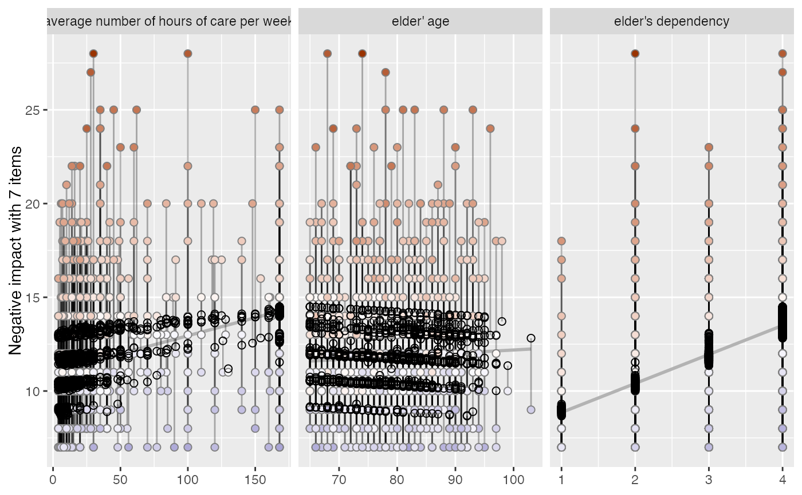
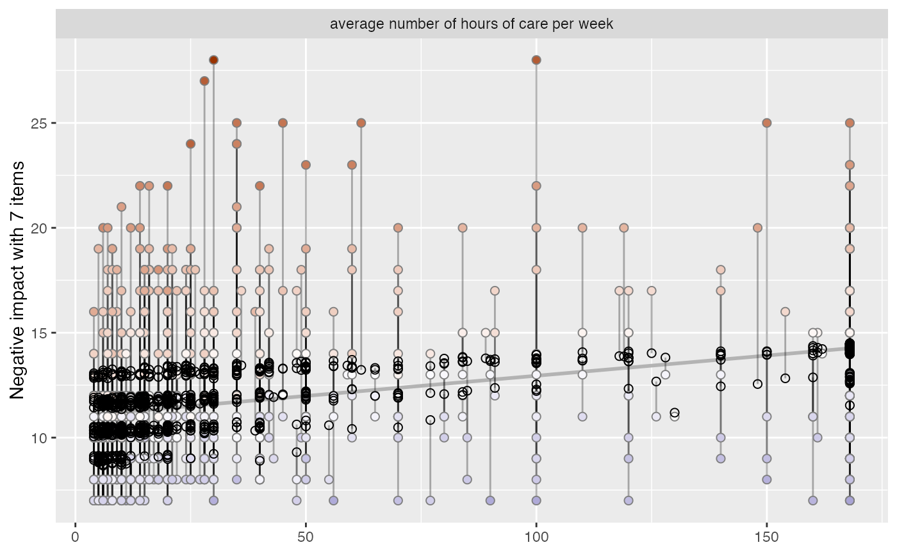

This function plots observed and predicted values of the response of linear (mixed) models for each coefficient and highlights the observed values according to their distance (residuals) to the predicted values. This allows to investigate how well actual and predicted values of the outcome fit across the predictor variables.
Usage
plot_residuals(
fit,
geom.size = 2,
remove.estimates = NULL,
show.lines = TRUE,
show.resid = TRUE,
show.pred = TRUE,
show.ci = FALSE
)Arguments
- fit
Fitted linear (mixed) regression model (including objects of class
glsorplm).- geom.size
size resp. width of the geoms (bar width, line thickness or point size, depending on plot type and function). Note that bar and bin widths mostly need smaller values than dot sizes.
- remove.estimates
Numeric vector with indices (order equals to row index of
coef(fit)) or character vector with coefficient names that indicate which estimates should be removed from the table output. The first estimate is the intercept, followed by the model predictors. The intercept cannot be removed from the table output!remove.estimates = c(2:4)would remove the 2nd to the 4th estimate (1st to 3rd predictor after intercept) from the output.remove.estimates = "est_name"would remove the estimate est_name. Default isNULL, i.e. all estimates are printed.- show.lines
Logical, if
TRUE, a line connecting predicted and residual values is plotted. Set this argument toFALSE, if plot-building is too time consuming.- show.resid
Logical, if
TRUE, residual values are plotted.- show.pred
Logical, if
TRUE, predicted values are plotted.- show.ci
Logical, if
TRUE), adds notches to the box plot, which are used to compare groups; if the notches of two boxes do not overlap, medians are considered to be significantly different.
Note
The actual (observed) values have a coloured fill, while the predicted values have a solid outline without filling.
Examples
data(efc)
# fit model
fit <- lm(neg_c_7 ~ c12hour + e17age + e42dep, data = efc)
# plot residuals for all independent variables
plot_residuals(fit)
#> `geom_smooth()` using formula = 'y ~ x'

# remove some independent variables from output
plot_residuals(fit, remove.estimates = c("e17age", "e42dep"))
#> `geom_smooth()` using formula = 'y ~ x'
